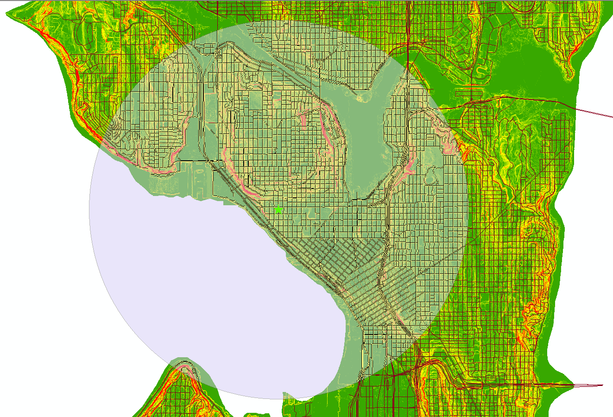
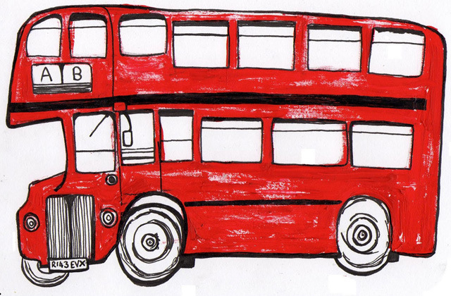

Side projects
A collection of miscellaneous works
SIEVE
Visualizing vaccine efficacy

For the final project in Jeff Heer's "Data Visualization" class, a couple classmates and I set out to build a tool for HIV researchers at Fred Hutch Research Center. The result of the project was SIEVE (the Statistical Interactive Explorer of Vaccine Efficacy).
SIEVE is an intereactive visualization for exploring data from vaccine studies. Our aim was to aid the process of sieve analysis, which compares the genetic sequences of viruses found in infected patients between vaccine and placebo groups. The visualization allows researchers in the field to study the affect of a vaccine at the level of the amino acids in the breakthrough viruses and find statistically significant differences in the groups.
You can access the tool here, learn more about it and fork the repository here.
Fremont Bridge bicycle data
Tracking cyclist ridership

In 2012, Seattle DOT installed bike counters on the Fremont Bridge. Since then, hourly counts of the number of cyclists crossing each side of the bridge have been piling up. Myself and Graham Clenaghan took to visualizing the data. The product is an interactive tool to let you check out bicycle ridership across the bridge as a function of weather, time of day, and day of the week.
Flat running routes
Finding stress-fracture-friendly ways to stay active

My wife and I like to run. We don't put in a ton of miles or run at a pace many would find impressive, but it's something we've always done together.
For awhile, she was struggling with a stress fracture in her foot. It seemed to be OK on flat stretches, but when we encountered changes in elevation it would flare up. We needed to find a route that was as flat as possible.
There are techniques in spatial optimization that can lead to a connected solution, minimizing some value. I wanted to see if I could find a route that minimized the change in elevation - in other words, what's the flattest possible route we can run?
To craft the problem, we had to specify a few things: a starting and ending point and the desired length of the run (distance). We also needed quite a bit of GIS data, which was all available on Seattle and King County's GIS portal (which is an incredible source of GIS data).
Some lines of Python scripts later, the data's ready to go.
The starting and ending point was chosen based off where we usually leave for our runs, and we went with a moderate run distance of 5 miles.
The optimization model was not trivial (see below). To ensure connectivity and that there were no cycles in our solution, I implemented the directed graph approach of Conrad, et al. (2012).
The model's solution indicated that the flattest route of at least the given length was over the J. Coney Connector (the Thomas St. Overpass), and along the water in Centennial Park. The route also begins and ends at Nielsen's Pastries - success!
More projects to come...
Just as unrelated as the rest

Sweet.